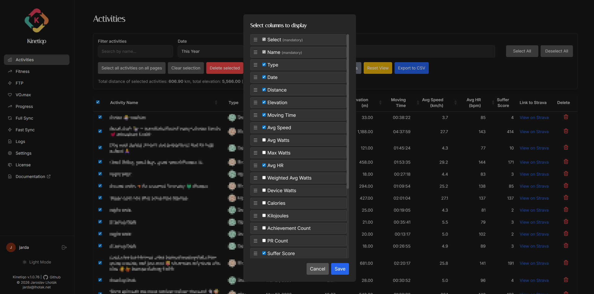

Kinetiqo is engineered around a clean Repository pattern using raw parameterized SQL queries for maximum throughput across PostgreSQL, MySQL, and Firebird.
Object-Relational Mappers (ORMs) introduce query overhead, hidden subqueries, and slow bulk imports. Kinetiqo uses a unified abstract DatabaseRepository interface backed by three hand-optimized concrete SQL drivers.
%s for PostgreSQL & MySQL, ? for Firebird).DATABASE_TYPE environment variable or CLI -d flag without modifying code.
Default high-concurrency SQL warehouse engine. Features connection pooling, full SSL mode support (disable, require, verify-full), and rapid bulk stream upserts using psycopg2-binary.
5432 | Env: POSTGRESQL_HOST
Standard LAMP/LEMP web stack compatibility. Powered by mysql-connector-python with full transactional support, automated table schema management, and UTF8MB4 character sets.
3306 | Env: MYSQL_HOST
Zero-config embedded or standalone SQL database. Uses firebird-driver with generator sequences, triggers, FIRST/SKIP pagination, and automatic .fdb file creation on startup.
3050 | Env: FIREBIRD_DATABASE
All three database implementations undergo rigorous automated testing matrixes (`test_sync_logic.py`) asserting that queries run cleanly without dialect mismatch. Whether you run PostgreSQL on a cloud cluster, MySQL on NAS, or Firebird in a container volume, Kinetiqo delivers uniform sub-millisecond query performance.